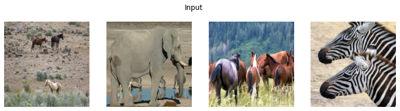
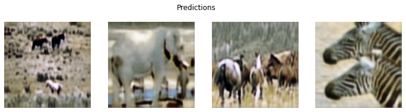

import tempfileWeights and Biases Callback
Defines a fastai Callback for specifically tracking image-to-image translation experiments in Weights and Biases.
SaveModelAtEndCallback
SaveModelAtEndCallback (fname='model', with_opt=False)
Basic class handling tweaks of the training loop by changing a Learner in various events
log_dataset
log_dataset (main_path, folder_names=None, name=None, metadata={}, description='raw dataset')
Log dataset folder
UPITWandbCallback
UPITWandbCallback (log='gradients', log_preds=True, log_model=True, log_dataset=False, folder_names=None, dataset_name=None, valid_dl=None, n_preds=36, seed=12345, reorder=True)
Saves model topology, losses & metrics
horse2zebra = untar_data('https://people.eecs.berkeley.edu/~taesung_park/CycleGAN/datasets/horse2zebra.zip')
folders = horse2zebra.ls().sorted()
trainA_path = folders[2]
trainB_path = folders[3]
testA_path = folders[0]
testB_path = folders[1]
dls = get_dls(trainA_path, trainB_path, num_A=100, num_B=100, load_size=286)
#os.environ['WANDB_MODE'] = 'dryrun' # run offline
wandb.init()
cycle_gan = CycleGAN(3,3,64)
learn = cycle_learner(dls, cycle_gan,opt_func=partial(Adam,mom=0.5,sqr_mom=0.999),
cbs=[UPITWandbCallback(log_preds=True, log_model=True, log_dataset=horse2zebra, folder_names=[trainA_path.name,trainB_path.name])],
metrics=[FrechetInceptionDistance()])
learn.fit_flat_lin(1,1,2e-4)
wandb.finish()wandb: Currently logged in as: tmabraham. Use `wandb login --relogin` to force relogin
wandb: Adding directory to artifact (/home/tmabraham/.fastai/data/horse2zebra/trainA)... Done. 0.3s
wandb: Adding directory to artifact (/home/tmabraham/.fastai/data/horse2zebra/trainB)... Done. 0.1s
/home/tmabraham/anaconda3/envs/UPIT/lib/python3.9/site-packages/fastprogress/fastprogress.py:74: UserWarning: Your generator is empty.
warn("Your generator is empty.")
wandb version 0.12.21 is available! To upgrade, please run:
$ pip install wandb --upgrade
Tracking run with wandb version 0.12.17
Run data is saved locally in
/home/tmabraham/UPIT/nbs/wandb/run-20220801_234826-umaf3jfa
Could not gather input dimensions
Adding SaveModelAtEndCallback()
Saving training set predictions
WandbCallback was not able to get prediction samples -> To be implemented| epoch | train_loss | id_loss_A | id_loss_B | gen_loss_A | gen_loss_B | cyc_loss_A | cyc_loss_B | D_A_loss | D_B_loss | frechet_inception_distance | time |
|---|---|---|---|---|---|---|---|---|---|---|---|
| 0 | 9.819530 | 1.455294 | 1.471061 | 0.432893 | 0.477370 | 3.085176 | 3.139654 | 0.405227 | 0.405442 | 93.815806 | 00:17 |
| 1 | 8.568236 | 1.112963 | 1.203730 | 0.294678 | 0.299053 | 2.385156 | 2.604889 | 0.257748 | 0.254994 | 93.795887 | 00:16 |
Waiting for W&B process to finish... (success).
Run history:
| D_A_loss | █▁ |
| D_B_loss | █▁ |
| cyc_loss_A | █▁ |
| cyc_loss_B | █▁ |
| epoch | ▁▁▁▁▂▂▂▂▂▃▃▃▃▃▃▄▄▄▄▄▅▅▅▅▅▅▆▆▆▆▆▆▇▇▇▇▇███ |
| eps_0 | ▁▁▁▁▁▁▁▁▁▁▁▁▁▁▁▁▁▁▁▁▁▁▁▁▁▁▁▁▁▁▁▁▁▁▁▁▁▁▁▁ |
| frechet_inception_distance | █▁ |
| gen_loss_A | █▁ |
| gen_loss_B | █▁ |
| id_loss_A | █▁ |
| id_loss_B | █▁ |
| lr_0 | ██████████████████████▇▇▇▆▆▆▅▅▅▄▄▃▃▃▂▂▂▁ |
| mom_0 | ▁▁▁▁▁▁▁▁▁▁▁▁▁▁▁▁▁▁▁▁▁▁▁▁▁▁▁▁▁▁▁▁▁▁▁▁▁▁▁▁ |
| raw_loss | █▇▆▅▄▄▃▃▄▂▂▂▃▄▂▃▂▂▃▂▃▂▂▃▂▂▂▃▂▃▂▂▃▂▁▂▂▂▁▂ |
| sqr_mom_0 | ▁▁▁▁▁▁▁▁▁▁▁▁▁▁▁▁▁▁▁▁▁▁▁▁▁▁▁▁▁▁▁▁▁▁▁▁▁▁▁▁ |
| train_loss | █▇▆▆▅▄▄▄▃▃▃▃▃▃▂▂▂▂▂▂▂▂▂▂▂▂▂▂▂▂▁▁▁▁▁▁▁▁▁▁ |
| wd_0 | ▁▁▁▁▁▁▁▁▁▁▁▁▁▁▁▁▁▁▁▁▁▁▁▁▁▁▁▁▁▁▁▁▁▁▁▁▁▁▁▁ |
Run summary:
| D_A_loss | 0.25775 |
| D_B_loss | 0.25499 |
| cyc_loss_A | 2.38516 |
| cyc_loss_B | 2.60489 |
| epoch | 2 |
| eps_0 | 1e-05 |
| frechet_inception_distance | 93.79589 |
| gen_loss_A | 0.29468 |
| gen_loss_B | 0.29905 |
| id_loss_A | 1.11296 |
| id_loss_B | 1.20373 |
| lr_0 | 1e-05 |
| mom_0 | 0.5 |
| raw_loss | 7.13516 |
| sqr_mom_0 | 0.999 |
| train_loss | 8.56824 |
| wd_0 | 0.01 |
Synced floral-voice-43: https://wandb.ai/tmabraham/UPIT-nbs/runs/umaf3jfa
Synced 7 W&B file(s), 0 media file(s), 1 artifact file(s) and 1 other file(s)
Synced 7 W&B file(s), 0 media file(s), 1 artifact file(s) and 1 other file(s)
Find logs at:
./wandb/run-20220801_234826-umaf3jfa/logs
b = dls.one_batch()
_,_,preds = learn.get_preds(dl=[b], with_decoded=True)dls.show_batch((b[0], b[1]), max_n=2, show=True)
plt.suptitle('Input')
dls.show_batch((preds[1],preds[0]), max_n=2, show=True)
plt.suptitle('Predictions')Text(0.5, 0.98, 'Predictions')
